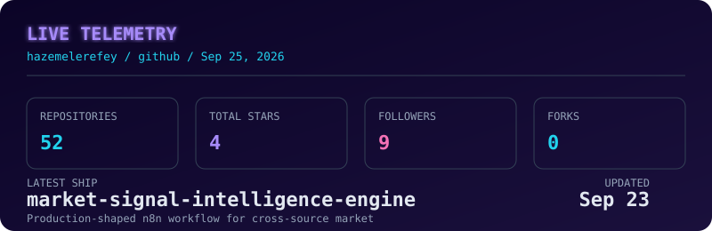

Data & Analytics
Executive dashboards, KPI design, forecasting, EDA, and insight-first storytelling.
SQL · PostgreSQL · Power BI · DAX · Python · Pandas

01 / Identity
I’m an Applied AI & Data Analyst with a strong visual-engineering side. My work spans SQL, Python, Power BI, predictive modeling, autonomous agents, and motion-rich frontend experiences.
02 / Capabilities
Executive dashboards, KPI design, forecasting, EDA, and insight-first storytelling.
Deep learning systems, computer vision, predictive models, and autonomous workflows.
Expressive, data-rich interfaces with depth, motion, and thoughtful interaction.
Translating technical constraints into clear business rules and stakeholder decisions.
03 / Flagship Ships
Industrial steel-surface defect detection with a custom YOLO model and a 24-scenario robustness-testing framework.
A real-time cinematic portfolio universe with custom shaders, atmospheric particles, and an integrated arcade game.
04 / Live Telemetry
